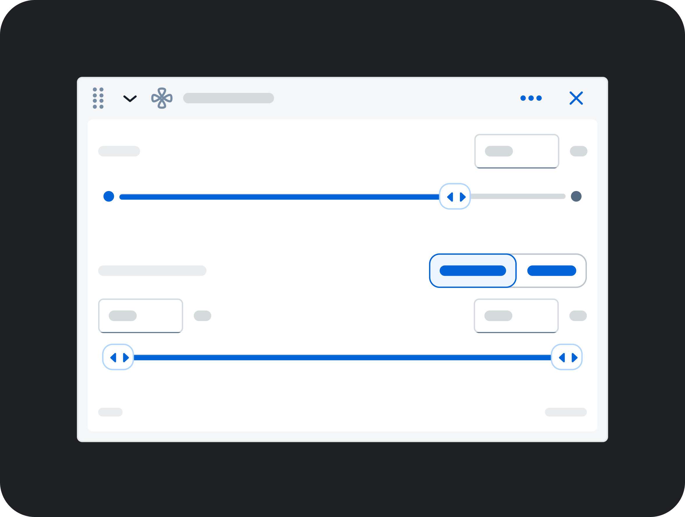
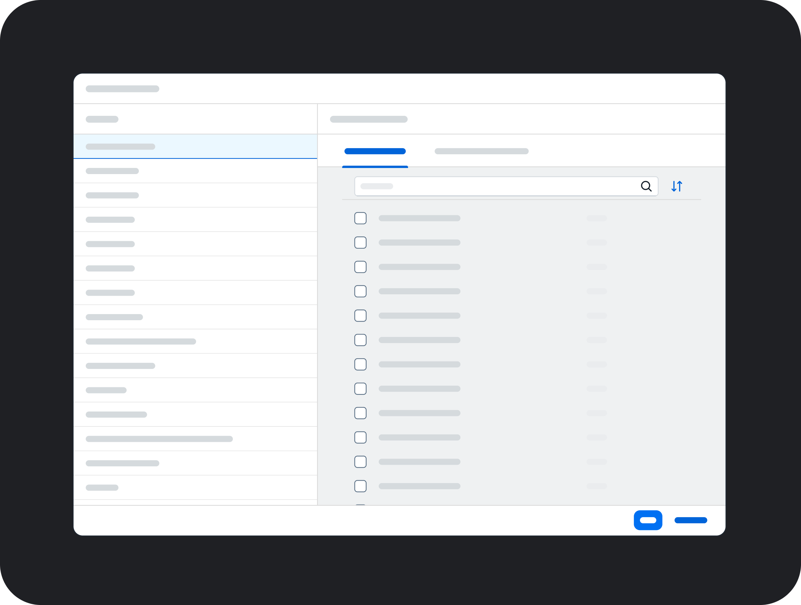
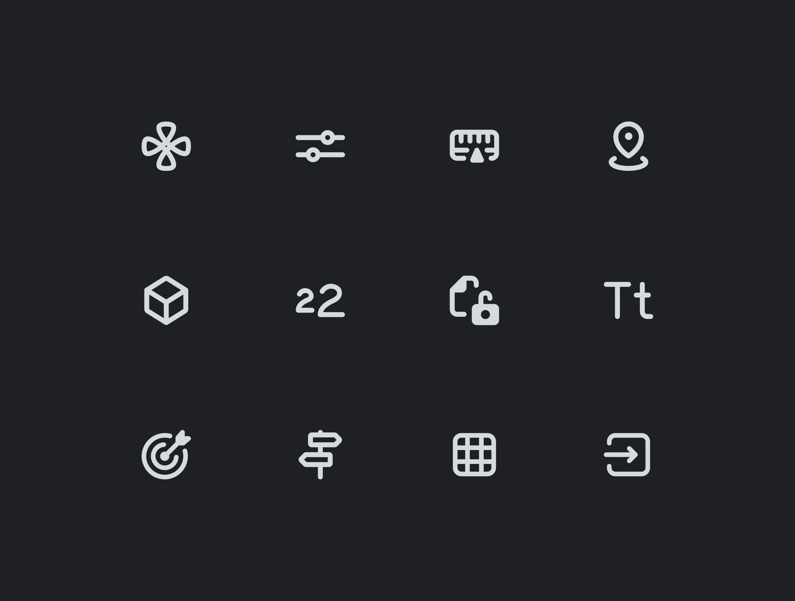
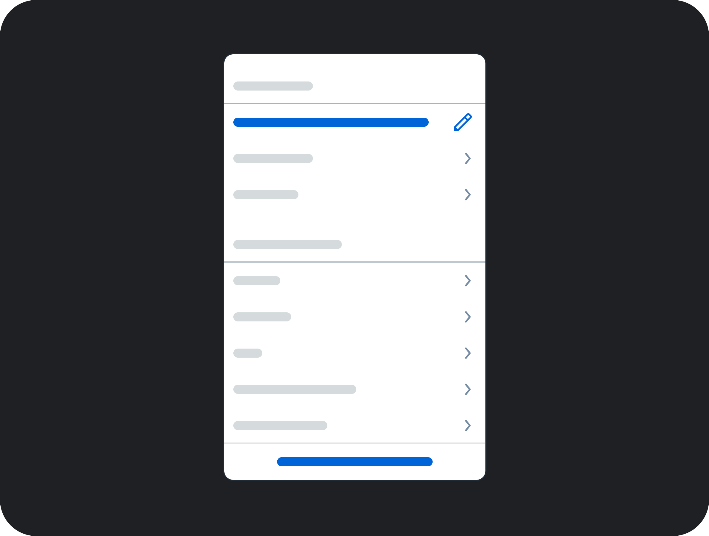
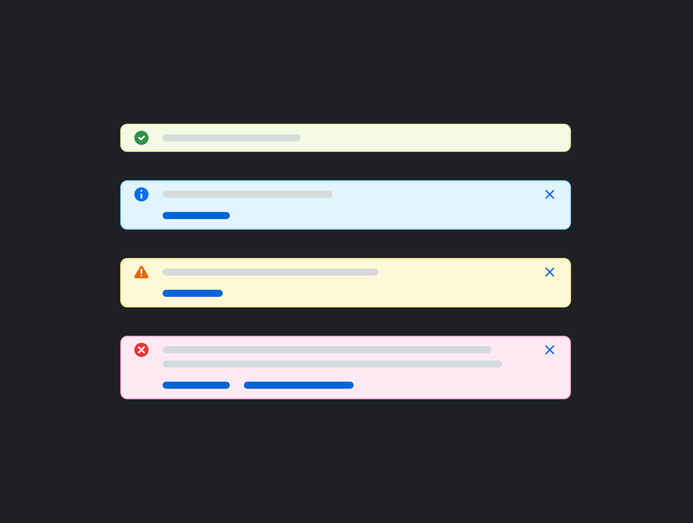
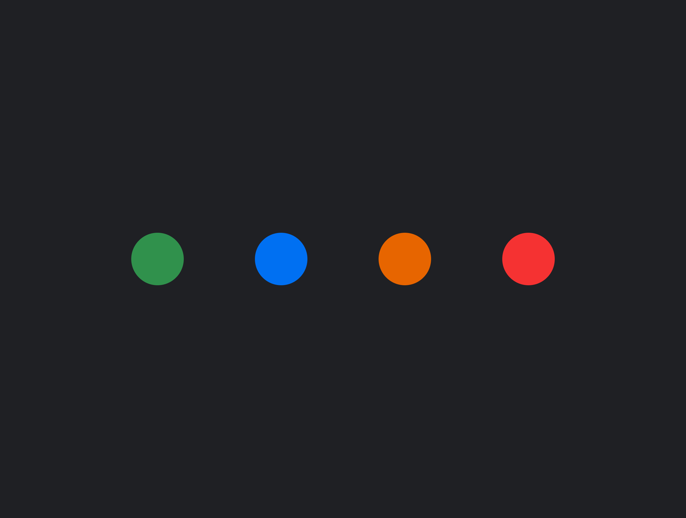
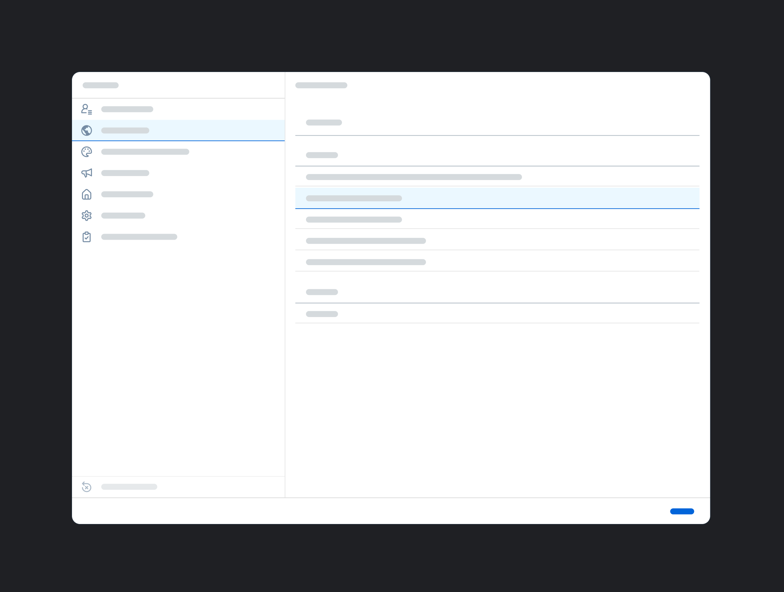
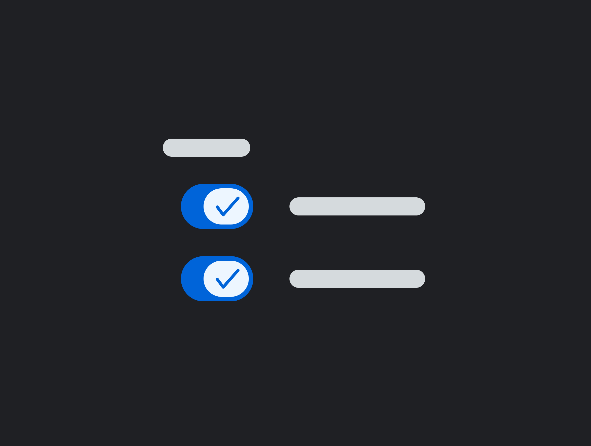
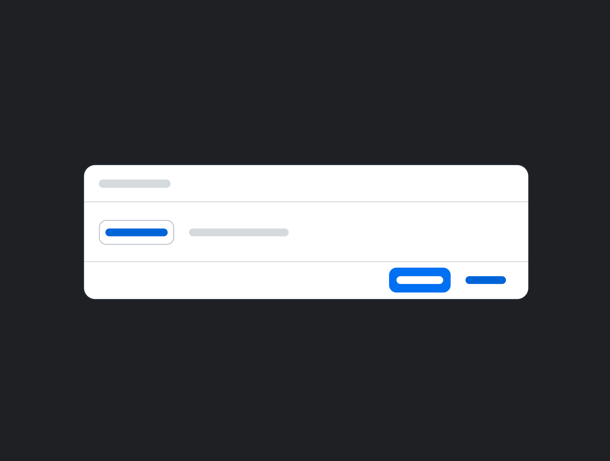

Timeline
August 2024 – April 2025 (Build & Launch)
July 2025 – Present (Strategy & Growth)
Team
4 UX Design Leads & 5 Frontend Developers
Role
Designed 11 components and collaborated with 4 development teams on implementation.
Led internal communications to drive adoption, including an organization-wide launch presentation.
Shaped the post-launch strategy for the kit, including release cadences, a dedicated SharePoint portal, and a contribution framework.
Impact
The DNA Web UI Kit drove measurable adoption across the organization. My Data Token component alone grew to 105,000+ inserts, becoming the most widely used DNA component across the organization.
Within months, 76 designers had also onboarded to the design system portal to access release notes and learning resources.
The Data & Analytics (DNA) Design team supports SAP Analytics Cloud, SAP Datasphere, and SAP Business Data Cloud. Together, these products help businesses unify, visualize, and analyze data at scale.
The team spans 8 countries with 165+ designers, researchers, and technical writers.
A closer look at SAP Analytics Cloud, one of three products supported by the DNA Design team
SAP’s Web UI Kit covers foundational tokens and atoms, but not the DNA-specific patterns our analytics products rely on. This created three key challenges:
The DNA Web UI Kit builds on SAP's existing design system to centralize custom components, patterns, page layouts, and guidelines. Each component page includes usage guidelines, common implementation examples, visual specs for developers, and accessibility annotations.
Each went through a structured process involving alignment with product design stakeholders, building the component and writing documentation, and completing a final quality sign-off with the UI Kit Owner.
Certain elements have been hidden or recreated due to NDA restrictions.
Avatar
DNA-specific avatar with variants for our 10 personas.

Data Token
Interactive tokens for configuring data visualizations.

Filter Settings Dialog
Dialog for managing filter configurations.

FPA Icon Guidelines
Documented usage guidelines for the FPA icon font.

Menu
Common contextual menu patterns for DNA products.

Message Strip / Toast
Message strip notification patterns for DNA products.

Semantic Icons
Guidelines and standards for semantic icon usage.

Settings
Settings dialog with variants for product-specific pages.

Switch
Guidelines for switch alignment and grouping patterns.

Upload File Dialog
Dialogs for file upload interactions.
User Menu
User account and profile menu.
One component in particular became central to the kit: the Data Token. The Data Token is one of the most frequently used elements in SAP Analytics Cloud (SAC) and Datasphere (DSP).
For customers, it’s the main interaction point for building and configuring data visualizations. For designers, it appears in nearly every analytics workflow, making it one of the first components they reach for.
It was also one of the most complex components I worked on, requiring alignment across 10 design stakeholders.
The Data Token existed in fragmented forms across SAC and DSP – each product had developed its own variations independently, with no shared foundation.
Before building the component, I needed to align the foundational pattern across both products, including spacing, size, color, text styles, and internal elements.
I gathered all existing implementations and worked with 10 designers across SAC and DSP to align on a unified proposal before starting new design work.
Previously, the spacing, color, and button styles varied across products. After alignment, a single unified pattern could be applied consistently across all areas.
With the proposal approved by design leads, I built the Data Token in Figma, accounting for multiple variants, theming support, minimum touch targets, and keyboard navigation.
The Data Token supports many configurations: leading icons, trailing icons, status indicators, buttons, and combinations of these elements. The challenge was enabling that flexibility in Figma without creating an unmanageable component.
One approach was to map each token configuration to a separate variant.
However, the number of variants would grow rapidly as configurations multiplied. This would
bloat the file, slow library performance, and make the component difficult to maintain.
If a required variant didn’t exist, designers would also need to detach the component to
customize it, breaking the connection to future library updates.
Instead, I designed leading and trailing element containers that hold swappable nested instances.
Common elements are accessible through a dropdown menu, while designers can still use Figma’s
swap instance tool for custom elements when needed.
This structure keeps the file lightweight, preserves library performance at scale, and allows
the component to support new use cases without requiring detachment.
This architecture made the component flexible enough to support dozens of analytics workflows while keeping the design library maintainable long-term.
Working across 4 development teams, I quickly realized that understanding how engineers built components was just as important as the design itself. I reviewed their CSS files, explored the UI5 Demo Kit, and learned the variables and component structures already used in production so my specs would map directly to implementation.
Getting developer feedback early surfaced an issue I hadn’t anticipated: I was over-speccing. My annotations repeated color variables, spacing values, and text styles that were already defined in the base component we were extending. Developers interpreted those details as intentional overrides and would have hard-coded them, bypassing the default system tokens.
To avoid unnecessary custom code and keep the components future-proof as SAP’s theming system evolved, I updated our handoff approach to only specify deviations from defaults rather than restating them. This change simplified the specs and led to more accurate implementations across teams.
Following the work on the Data Token, I used these specs to create a handoff template, which we documented and added directly to the DNA Web UI Kit.
The DNA Web UI Kit launched at a global DNA Design meeting in April 2025, where I introduced the first set of components with live demos. Within three weeks, the Data Token alone had been used over 1,000 times across six teams.
The kit launched with strong momentum, but lacked the infrastructure needed to sustain adoption.
Designers needed a clear way to find updates, ask questions, and contribute improvements.
When I returned to the team full-time, I partnered with a senior design systems designer to define
the next phase of the system: a central resource hub, governance model, structured release cadence,
and dedicated communication channels.
We presented the strategy to the Head of Design and rolled it out across the organization in Q4
2025.
Just three weeks after launch, the Data Token had been used over 1,000 times by designers across six teams. Within ten months, it surpassed 105,000 inserts, becoming the most widely used component in the DNA Web UI Kit.
The system has since been adopted by 71 project teams, enabling designers to reuse shared patterns rather than recreating components across products.
The strategy rollout in Q4 2025 extended that reach. The DNA Design Systems SharePoint portal received 379 total views from 76 unique designers in its first few months, with viewership up 19% in the most recent 30-day period, indicating sustained and growing engagement.
"I appreciate your patience, focus, and ability to turn complexity into clarity while tackling the holistic big picture all the way down to the granular details. You've been an invaluable asset to this team."
— Amina Musa, Analytics UX Design Lead @ SAP
"Thank you again for your detailed mock ups and supporting us with sign offs in the Horizon theming support! We are all amazed by the fine details you spec out in the Form section header, RSS tokens and the complex (advanced) filter dialog! Truly and deeply appreciated!"
— Michelle Wong, Senior Developer @ SAP
"Amazing newsletter. Super easy to digest and very relevant for our product design team. Thanks team for putting in the extra efforts!"
— Joelle Jones, Analytics UX Design Manager @ SAP
Building a design system is only half the work. Getting an organization to adopt it is the other half. Aligning 10 contributors on a single Data Token proposal, collaborating with 4 development teams across different codebases, and building the infrastructure to sustain adoption across 165+ designers all made that clear.
I also learned what it means to own something end-to-end — from the first alignment meeting to live sign-off, and from the launch presentation to the rollout strategy that followed. This experience solidified my interest in design systems as a long-term area of growth, and in work that sits at the intersection of people, process, and systems thinking.